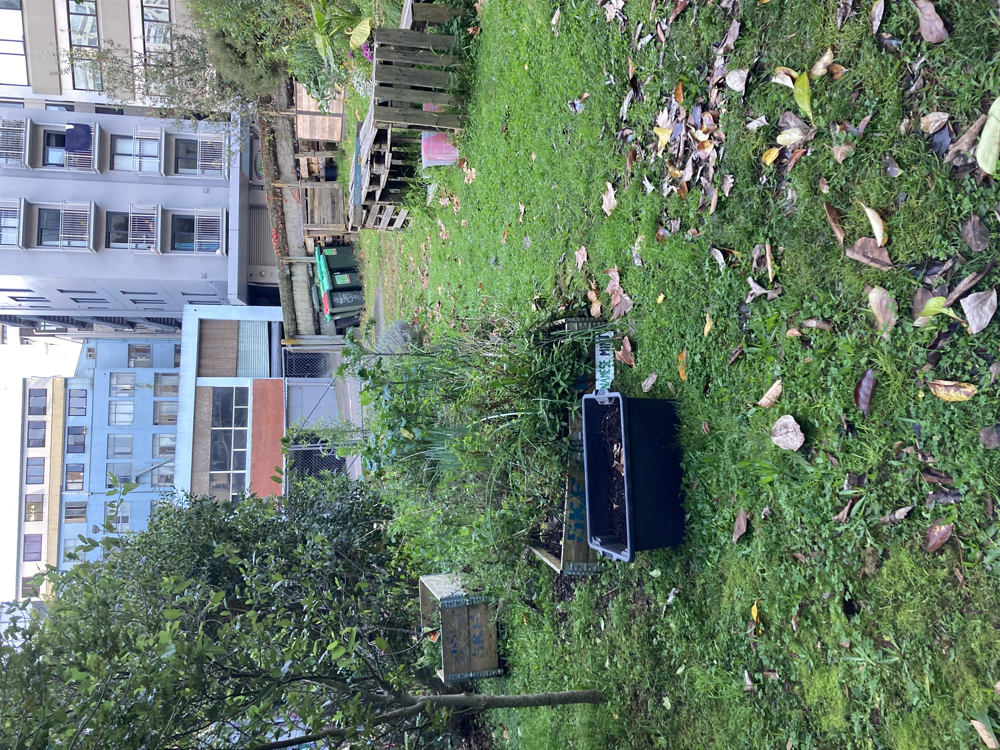
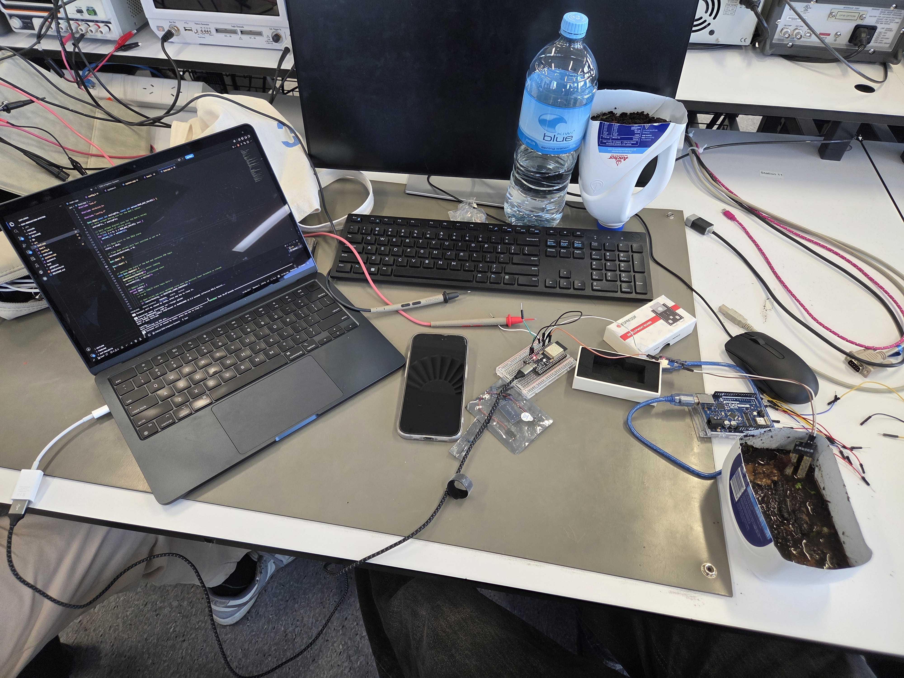
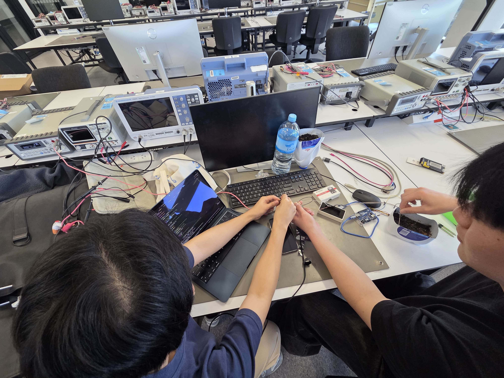
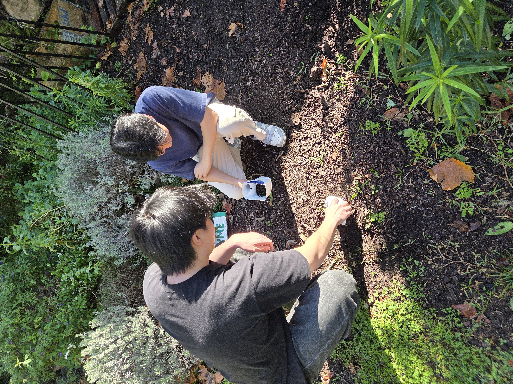

Currently on the Software & Controls sub-term of the Engineering for Sustainable Development (ESD) community project of developing an autonomous gravity-fed irrigation system for the University of Auckland Bee Sanctuary.
The system consists of physical infrastructure extended throughout numerous garden beds, with ESP32 firmware set-up to drive smart logic-based watering decisions, reducing water waste and manual labour in accordance with the project's sustainability goals. IoT integration via ThingsBoard is also implemented to facilitate remote control and monitoring.
I am personally responsible for state machine firmware design in C++ on an ESP32 microcontroller, and the control logic that interfaces with the OpenMeteo weather API, using historical and forecasted weather data to determine optimal watering times.
The project has undergone a major design iteration, where the original approach relied on resistive soil moisture sensors. However, as the garden bed count grew, the sensor requirements scaled multiplicatively which was unsustainable. As a team, we made the decision to shift to a weather forecast-driven digital approach, which provides the same environmental feedback while saving hardware costs.
See the below photos of the bee sanctuary, and our hands-on testing with the resistive soil moisture sensors. More photos to come as this is still in development!



